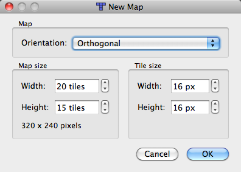
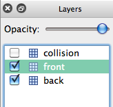
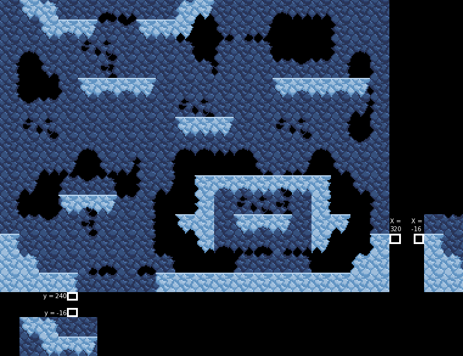

In the future, I plan to have an integrated map editor but for now, I will explain how you currently add new levels to the game.
First, you will need both Tiled and a text editor, preferably one like Sublime Text 2 or Notepad++ that support XML syntax highlighting. You will also want to make sure that the game's folder is open, as all of the folders referenced will be relative to the folder that the game executable is in.
If you are on a Mac, you will want to "Show Package Contents" and then go to "Contents/Resources"
Next, make a tileset. Your tileset can be anything that you want it to be, so long as you use 16x16 tiles. When you're done, save the tileset as a .png file with the same name that you plan on your level having and place it in "gfx/tiles". For example, one of my levels is named "tower", so I would save the tileset as "tower.png" before placing it in "gfx/tiles".
Now, open Tiled. Create a new map and use the following settings.
Once you've done that, create two new layers and name the three layers you have, from top to bottom, "collision", "top", and "bottom". When you're done, the layers should look like the following.
Now create your level. Here is what each layer is for:
To ensure that your level works as intended, I'd highly recommend that, at places that you place a tile the player can walk on at the edge of the screen, you also place a tile on the the other side that the player can walk on at the same height.
Once you're done creating your level, save it, again, as the name of the level, and then place it in the folder "maps".
If you want custom music and/or win sounds for your level, you need to save them in .ogg format and place them both in "music", music with the name of your level and win sound with the name of your level, followed by "_win". For example, "tower_win.ogg".
You are not required to have both at the same time. You can have one, the other, or neither, so long as you make sure to override the music to have some other music playing or else no music will play. Win sounds, on the other hand, default to a universal win sound so you are not required to create one or override it to have one play at the end of a match but you are required to override it if you want a custom win sound.
Next, open your text editor of choice and create a new file. If it supports syntax highlighting, set it to XML. For reference, I am going to place a completed level configuration file right here.
Note: When the integrated map editor is added, all elements added here (other than where certain traps spawn) will be required to be placed directly on tiles, meaning x and y values will be required to be multiples of 16 (unless, like buttons, their height is 16), so I would recommend placing each element at x and y values that are multiples of 16.
As you can see, we have the top level node "level" and several nodes inside it. No matter if there are any nodes inside them, you must always have opening and closing nodes for "spawns", "bounds", and "hills".
The "spawns" node is for spawn points. They are all required to have the attributes "x" and "y", and will ignore any other attributes. You are required to have at least four spawn points (one for each player to start at).
The "bounds" node is for boxes that are used to keep the player from falling through the tilemap at points that they wrap around the screen. At all heights that the player can wrap around the x axis, you need to place bounds at the x values -16 and 320. If you want the player to wrap around the y axis, and there are tiles the player can collide with at y values 224 AND 0 near the place where the player can wrap around the screen, you are required to place bounds at y values -16 and 240 or the player can get stuck in the tiles at 0. Below is an image to illustrate.
The "lavas" node (not in the sample file) is for lava. Lava takes the values "x", "y" and "width" and starts at x and y and places 4x4 segments every 4 pixels for the extent of the designated width.
The "hills" node is for King of the Hill hills. Since the hills are only 10 pixels tall, you need to add 6 to your y value if you want them to sit on the tile correctly.
The "traps" node is for traps. Since trap buttons are only 4 pixels tall, you need to add 12 to your y value if you want them to sit on the tile correctly. There are two types of trap, random and button-activated.
Here is a list of all of the traps:
Random traps are required to have the following attributes:
Button-activated traps are required to have the following attributes:
The "overrides" node is for the player to override nodes and tile maps so that the game looks for something other than the default value (the map name). All overrides are required to have one attribute, "name", which is the name of the file that the game should look for instead of the default.
The following overrides can be used:
When you are done creating your level, save it with the name of your level and the extension ".lvl", for example "tower.lvl", and place it in "maps".
The last thing you have to do, to get the game to acknowledge the existence of the level, is to go into the folder "maps", open "levels.lvl" and add your level's name in a node to the end of the list in the file.
Once you've done that, save levels.lvl, open the game, and your level should show up on the level selection screen at the end of the list.